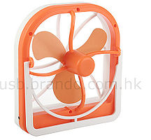

Ventilador
 De: La Frikipedia, la enciclopedia extremadamente seria.
De: La Frikipedia, la enciclopedia extremadamente seria.
| De la serie rarezas del mundo:
|
| Ventilador
|
| 
|
| Un ventilador de color amariconado
|
|
| Cosa que representa
|
Ventilador/ventilación/viento/zapatos viejos con un plátano dentro.
|
| Sirve para
|
Cortar dedos Refrescarnos
|
| ¿Existe?
|
Sí
|
| Trastorno del cerebro
|
Te marea si lo ves mucho tiempo
|
| ¿Es comprensible?
|
¿Es comprensible dar muchas vueltas?
|
| Hábitat
|
Techos, aunque los hay de pedestal
|
| Poder
|
Es la tercera cosa no viva con más poder
|
| Tipo de rareza
|
Están siendo reemplazados
|
| ¿Natural o artificial?
|
Cyborg
|
| Nivel de frikismo
|
Si girar es friki...
|
| ¿Es abundante?
|
No, los aires acondicionados son mejores
|
Los ventiladores fueron creados hace millones de años especialmente creados para reyes, es decir, cavernícolas que tenían más piedras que los demás y por lo tanto podían pagarlos y también mandarlos a hacer que en estos caso de "Tecnología" era un hombre con una hoja muy grande al cual le daban las susodichas piedras para que el hombre les echara el aire y ahi mientras el sujeto echaba el aire se dieron cuenta de qué... eran demasiado perezosos y además tenían tecnología de punta
Invencion (Según los romanos)
Un día un Neanderthal buscaba algo para cortarles los dedos a sus víctimas y después comérselos. Luego, de una forma totalmente inexplicable (tal vez a los investigadores les da paja averiguar) creó el primer ventilador. Con él pudo cortarle fácilmente los dedos a sus presas, y también se cortó 11 a el (10 de las manos y otro mientras estaba en erección).
Pronto descubrió que su ventilador podía "ugga aak kakapopo" (era un neanderthal, vamos que ni yo le entiendo) así que empezó a comercializarlos entre sus amigos y familiares no cercanos, por precios que solo vendiendo dos de tus cuatro pene podrías comprar. Hasta que llegaron los DDP (Defensores de los Derechos de los Pobres) y rebajaron su precio a uno de tus penes.
Cosas que puedes hacer con un ventilador
- Hacer circular el aire.
- Cortar dedos.
- Marearte mientras ves cómo gira.
- Hablar raro poniendo la cara en frente.
- Marearte de nuevo mientras ves cómo gira.
- Refrescarte; justo ahora estoy usando uno.
Enemigos del ventilador
- El abanico: antiguo enemigo derrotado del ventilador, aunque todavía existe como método portátil de refrescamiento solo utilizado por las viejitas y por ser tradicional, ha estado siendo reemplazado por el papel común, la mano o cualquier objeto de las dimensiones adecuadas para cumplir esta función.
- Abanico ninja jutsu: el abanico jutsu ninja era uno de los jutsus más fuertes, hasta que se inventó el ventilador (combinación de shiurikan y rasengan) siendo esta una las técnicas más difíciles de aprender (o sea, es muy difícil conseguir un enfuche en una aldea escondida); solo los mejores ninjas (los ricachones que tenian enchufe en su casa) podían aprender esta técnica degradando el abanico jutsu al solo uso de las viejitas para defenderse de los roba cartera (lo que generó una caída laboral de los ninjas).
- El aire acondicionado: el peor enemigo no solo del ventilador sino de todo método de refrescación existente; siendo un primo de la nevera, tiene una alta capacidad de congelación que complace el masoquismo humano.
- El aire acondicionado ninja jutsu: solo kakashi y sasuke puede controlar esta técnica ya que debido al uso del chichidori se puede generar la suficiente energíachacraeléctrica para el consumo de esta. Debido a la gran intensidad de energíachacraeléctrica que se necesita, no es muy popular.
- Papel: enemigo, enemigo en especial en áreas sin enchufes, debido a es fácil de llevar y no requiere energía eléctrica.
- Papel ninja jutsu: con unos simples movimientos de manos se puede convertir este en un abanico.
- Áreas sin enchufes: lo peor que le puede pasar a un ventilador y aire acondicionado, ya que sin energía eléctrica solo son plástico y metal, son nada, nadie los quiere, son echados a un lado o usados de silla mientras el abanico y el papel se burlan de él.
Autor(es):
- Roms
- El Sevillano
- Freaky
- Helloombark
- Sdrf92
- Bladguer
- Harry El del Pote
- Gñapero Solitario
- Generibot
- CRIS7INA
Frikipedia 2005-2016, Licencia
GFDL 1.2 - Extraído por FrikiLeaks